3
半监督学习简介
半监督学习是一个机器学习分支，它试图解决包括标记和未标记数据的问题，采用包括聚类和分类方法特征的概念。
未标记样本的高可用性，以及正确标记巨大数据集的困难，驱使许多研究人员研究最佳方法，以允许将标记样本提供的知识扩展到更大的未标记群体，而不损失准确性。在本章中，我们将介绍机器学习的这一分支，并讨论:
- 半监督场景
- 半监督学习的不同方法
- 在这种情况下有效运作所需的假设
然后，我们将继续介绍几种半监督学习算法，并展示它们在实践中的Python编码示例。示例算法包括:
- 生成式高斯混合算法
- 自我训练
- 合作培训
我们将首先描述半监督场景是如何定义的，以及它与其他数据场景有何不同。
半监督场景
一个典型的半监督场景与一个监督场景没有太大的不同。假设我们有一个数据生成过程，pT7】data:
然而，与监督方法相反，在监督方法中，我们可以依赖完全标记的数据集，我们只有从pT13】数据中提取的有限数量的 N 个数据点，并提供有标签，如下所示:
至于其他方法，假设训练样本是统一抽取的，以便不排除pT17】数据的任何区域。当这个条件满足时，可以考虑从边际分布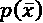中抽取更大数量( M )的未标记样本:
然后，半监督学习的上下文由两个集合{XT24】L、YT28】L}和 X U 的联合来定义。关于无标签样本的一个重要假设是，它们的标签被认为是随机丢失的，与实际标签分布没有任何关联。假设未标记数据集的分布与已标记数据集在类平衡方面没有显著差异(例如，我们不能期望90%的未标记样本属于同一类，而剩余的样本分布在所有剩余的类中)。
在一般框架下，对 N 和 M 的取值没有限制；然而，当未标记点的数量(远远)大于标记集的基数时，通常会出现半监督问题。如果我们能够从pT44】数据中画出N>T63】M个标记点，那么继续使用半监督方法可能是没有用的，经典的监督方法可能是最好的选择。我们需要的额外复杂性是由 M > > N 证明的，这是所有那些可用的未标记数据量很大而正确标记的样本数量少得多的情况下的常见情况。
例如，我们可以轻松地访问数百万张免费图像，但详细的带标签的数据集非常昂贵，并且只包含有限的可能性子集。
然而，是否总是可以应用半监督学习来改进我们的模型？这个问题的答案几乎是显而易见的:不幸的是，在某些情况下，这是不可能的。
作为一个基本的规则，我们可以说，如果关于 X U 的知识增加了我们关于先验分布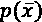的知识，半监督算法很可能比纯监督算法执行得更好——因此局限于XL——对应。另一方面，如果未标记的点来自不同的分布或来自排除在训练过程之外的 p 数据的区域，则最终结果会差得多。
在实际情况下，没有办法立即了解半监督算法是否是最佳选择；因此，交叉验证和比较是评估场景时采用的最佳实践。还应该清楚的是，在监督场景中，我们直接对条件概率分布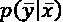感兴趣，我们可以摆脱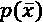，在半监督场景中，我们经常被迫对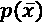建模，以便利用未标记的样本。这样的问题也可以用不同的方式来分析，这揭示了半监督学习的另一个局限性。
因果场景
正如Peters，Janzing和schlkopf(在Peters J .，Janzing D .，schlkopf b .，因果推理的要素，麻省理工学院出版社，2017年)所指出的，半监督学习在因果场景中是不可能的。实际上，让我们考虑一个产生 y 的过程，作为原因 x 的结果。我们可以假设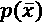的知识增加了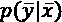的知识吗？答案可以直观的理解。如果我们已经对给定一组原因的结果的条件分布进行了建模，那么决定哪一个原因是最有可能的所需的所有信息都已经被编码到模型中了。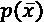的额外知识(包括从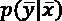中排除的区域的密度)不会对选择一个效果而不是另一个效果的决定产生任何影响，因为这样的过程仅由触发所有训练效果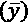的数据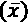的知识来管理。
换句话说，如果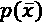与我们在训练阶段已经考虑的分布不同，这并不重要(一般来说，这可能是一个问题，但为了解决它，有必要从实际生成过程中采样更多数据，而不涉及任何半监督方法)。这种行为的原因可以概括为，给定一些原因，结果的分布与原因的分布无关。
为了进一步简化这个概念，我们可以考虑因果场景按钮→灯。我们知道，为了打开灯，需要在特定的频率下按下按钮更多次，为了模拟这个问题，我们收集了一个训练集( X，Y ，包含 N 个观察值。我们感兴趣的是条件概率 p(light | button = ON) ，这个很容易确定。如果有人告诉我们他知道确切概率 p(button = ON) 会怎么样？在这种因果场景中，我们是否也可以将其考虑在内，如下图所示？
按钮的状态决定了灯的状态(因果场景)
请记住，我们是在半监督的情况下工作；因此，我们无法找到相应的结果。这意味着，不幸的是，我们不能使用 p(button = ON) 来改进我们的模型，因为，例如，知道一个频率范围的概率是 p 0 没有权利来影响我们的知识 p(light | button = ON) ，这是基于观察到的证据(也就是说，影响是以真实的结果为条件的，这就是我们建模所需要知道的全部内容)相反，相同的作者表明，反因果场景与半监督学习完全兼容。在这种情况下，我们实际上是在建模 p(原因|结果)，显然，对 p(结果)的了解会影响条件概率。
考虑到我们的例子，由于灯是由按钮触发的，如果我们进行了 N 次实验，我们可以创建一个初始模型 p(button = ON | light) ，但是我们不能确定我们考虑到了所有可能的结果(灯开/关)。因此，在我们的第一次估算中，我们很可能会引入一个误差。关于 p(light) 的知识可以帮助我们减少这样的误差，因为我们知道，无论何时观察到灯亮的概率大，正确的按钮频率的概率也大(反之亦然)。
本章中讨论的大多数例子都是基于这一假设。我们通常认为类是原因，属性是结果(也就是说，一朵花属于Iris数据集中的一个类的事实决定了一组特定的特征，如花瓣长度和萼片宽度)。然而，我邀请读者在每种情况下评估这个条件，并测试算法。
事实上，不同的研究表明，通过相对于仅使用较小的标记数据集来提高分类的准确性，半监督学习也可以对与因果场景相关的性能产生不可忽略的影响。因此，如果无法立即获得更大的标注数据集，这些方法仍然是一个很好的起点。当然，当数据科学家肯定会使用因果模型时，他们也必须准备好根据标准的监督方法重新评估它，以便检查是否有实际的改进。在后一种情况下，一组未标记的点没有帮助，只有通过使用更大的标记训练集才能获得更好的精度。
直推学习
当半监督模型旨在找到未标记样本的标签时，这种方法被称为直推式学习。
在这种情况下，我们对建模整个分布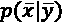不感兴趣，这意味着确定两个数据集的密度，而是只对未标记的点寻找 。在许多情况下，这种策略可以节省时间，并且当我们的目标更倾向于提高我们关于未标记数据集的知识时，它总是更可取的。当然，这个场景意味着关于的知识可以提高我们关于的知识；因此，如前所述，它不适用于纯粹的因果过程。
。在许多情况下，这种策略可以节省时间，并且当我们的目标更倾向于提高我们关于未标记数据集的知识时，它总是更可取的。当然，这个场景意味着关于的知识可以提高我们关于的知识；因此，如前所述，它不适用于纯粹的因果过程。
归纳学习
与直推式学习相反，归纳式学习考虑所有的 X 数据点，并试图确定一个完整的或一个函数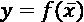，该函数可以将标记点和未标记点都映射到它们对应的标签。
一般来说，这种方法更复杂，需要更多的计算时间。因此，根据 Vapnik的原则——我们不应该将解决更一般的问题作为解决特定问题的中间步骤——如果没有要求或必要，最好选择最务实的解决方案，如果问题需要进一步的细节，可能的话，扩展它。
半监督假设
正如前面的章节所解释的，半监督学习不能保证改进监督模型。一个错误的选择可能会导致性能急剧恶化。然而，可以陈述一些半监督学习正常工作所需的基本假设。它们并不总是数学证明的定理，而是证明完全任意选择的方法的经验观察。
平滑度假设
让我们考虑一个实值函数 f(x) 和相应的度量空间 X 和 Y 。这样的函数称为Lipschitz连续的，如果:
换句话说，如果两个点xT2 1和xT6】2靠近，那么对应的输出值yT10】1和yT14】2不能任意远离。这个条件是回归问题中的基本条件，在回归问题中，通常需要对训练样本之间的点进行归纳。
例如，如果我们需要预测一个点 x t 的输出:x1<xt<x2并且回归量是Lipschitz连续的，我们可以确定 y t 将被正确地有界这种行为通常被称为一般平滑，但在半监督学习中，添加一个显式限制是有帮助的(与聚类假设相关):如果两个点在高密度区域(聚类)中并且它们很接近，那么相应的输出也必须很接近。以更正式的方式，平滑度假设可以表示为:
在这个公式中，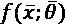是一个通用的参数分类器。因此，给定一个被分类为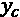的点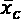，存在一个球，其中所有的点将以相同的方式被分类。这个定义没有对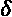施加任何限制，但是，为了我们的目的，我们需要假设存在两个大于零的裕量(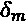和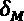)，所以引入一个下限和一个上限给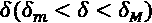。通过这种方式，我们将合适的函数族限制在相对缓慢变化的函数组中。
在半监督学习的背景下，平滑度假设起着基本作用，因为如果两个样本处于低密度区域，它们可能属于不同的聚类，并且它们的标签可能非常不同。这并不总是正确的，但是在半监督模型的许多定义中，包含这个约束以允许一些进一步的假设是有用的。
集群假设
这个假设是和上一个严格挂钩的，可能更容易接受。它可以用一系列相互依赖的条件来表达。集群是高密度区域；因此，如果两个点靠近，它们很可能属于同一个聚类，并且它们的标签必须相同。低密度区域是分离空间；因此，属于低密度区域的样本很可能是边界点，并且它们的类别可以不同。为了更好地理解这个概念，考虑监督SVM是有用的:只有支持向量应该在低密度区域。让我们考虑下面的二维例子:
两个分离的二维簇的表示
在半监督场景中，我们无法知道属于高密度区域的点的标签；然而，如果它足够接近一个标记点，可以构建一个球，其中所有的点具有相同的平均密度，那么我们就可以预测我们测试样本的标签。相反，如果我们移动到一个低密度区域，这个过程会变得更加困难，因为两个点可能非常接近，但具有不同的标签。我们将在下一章讨论半监督、低密度分离问题，其中将分析不同的半监督支持向量机。
流形假设
这是最不直观的假设，但它对降低许多问题的复杂性非常有用。首先，我们需要提供一个流形的非严格定义。一个 n 流形是一个全局弯曲的拓扑空间，但是局部同胚于 n 维欧几里得空间。换句话说，可以选择一个足够小的区域，然后将它变形到一个标准的欧几里得平面空间。然而，当考虑整个空间时，这是不正确的。
例如，如果我们从太空看地球，我们可能会认为它的居民均匀地分布在整个体积上。我们知道这是错误的，事实上，我们可以创建地图和地图集，用二维流形来表示。用三维向量来绘制一个人的位置是没有意义的。使用投影更容易，使用纬度和经度更容易。
在下图中，有一个流形的例子:在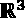中的球面:
由球面得到的2D流形
围绕 P (用于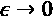)的小块可以映射到一个平坦的圆形表面。因此，流形的局部性质基于欧几里德几何，而全局性质需要适当的数学扩展，这超出了本书的范围(进一步的信息可以在Belkin M .，Niyogi P .，黎曼流形上的半监督学习，Machine Learning 56，2004)中找到)。
流形假设陈述了 p 维样本(其中p>T45】1约位于一个 q 维流形上，其中p<T47】q。不需要过多的数学严谨，我们可以这样说，比如我们有 N 个1000维的有界向量，它们被围入一个边长等于 r 的1000维超立方体。对应的n-体积为rT30】pT32】= rT34】1000；所以填满整个空间的概率很小(并且随着 p 减小)。相反，我们观察到的是低维流形上的高密度。
这个假设授权我们应用降维方法，以避免贝尔曼理论化的维数灾难(读者可以在Howard R. A .，动态规划和马尔可夫过程，麻省理工学院出版社，1960年)中找到进一步的信息。在机器学习的范围内，这种效应的主要后果是，当样本的维数增加时，为了实现高精度，需要使用越来越多的样本。
此外，Hughes观察到(这种现象以他的名字命名，并在Hughes G. F .，关于统计模式识别器的平均准确度，IEEE信息理论汇刊，14/1，1968)统计分类器的准确度与样本的维数成反比。这意味着，只要有可能在低维流形上工作(特别是在半监督场景中)，就会实现两个优点:
- 更少的计算时间和内存消耗
- 更高的分类精度
在我们开始分析一些算法之前，我想用一个虚拟的例子来说明流形假设的重要性。想象我有一张2000×1000的RGB画布。每个像素用24位编码，所以它可以有2 24 = 16，777，216个可能值。如果画布中的所有像素(2，000，000)都是独立的，那么图像总数为16，777，216 2000，000 。不难理解这个数字极其庞大(远远超出了运行一个深度学习应用所需的计算能力)。现在，让我们考虑一个手写数字的数据集(像MNIST，我们将多次使用)，并假设分辨率为100 × 100，灰度为8位编码。数字有10类，所以如果样本是统一收集的，我们可以假设每个数字有250，000个样本。因为不允许重复，并且小的变化可以通过数值近似法丢弃，所以每个图像必须有很大的不同。即使我们假设我们有一个高分辨率的数据集，包括最小的变化，数字相对于图像总数的百分比肯定是可以忽略的(如果你试图用智能手机或袖珍计算器计算，你会得到0，因为所需的精度非常高)。
一个更复杂的例子是人脸识别应用程序。它可以成功地使用例如1，000，000幅图像的数据集进行有效的概化。那么剩下的所有组合呢？其中许多是随机噪声，但由于它们都是可能的组合，如果你给你的桌子拍一张照片，将分辨率降低到2000×1000，并开始检查你的怪物数据集，你最终会找到你桌子的图像(连同蒙娜丽莎，你的肖像和你能想象的任何其他东西——假设合理的质量损失)！这可能令人惊讶，但这是基本组合学的正常结果。
在下面所有涉及随机数的例子中，种子被设置为1000 ( np.random.seed(1000))。其他值，或没有重置它的后续实验，可能会产生稍微不同的结果。
因此，我们可以得出结论，流形假设表明一个泛族的所有实例(例如，图像)都隐式地聚集到分离的子空间中。其中一些在语义上是有效的，而大多数其他的是有噪声的，因此可以忽略不计。我们的任务总是集中在前面的子集上，幸运的是，这些子集是相当结构化的，并且具有合理的数量和维度。在定义了关于半监督场景的主要概念后，我们可以开始探索一些实用的算法，这些算法依靠标记和未标记数据集来执行更精确的分类。
生成式高斯混合
我们将要讨论的第一个模型被称为生成高斯混合模型，它旨在使用加权高斯分布的总和来模拟数据生成过程 p 数据数据。由于模型是可生成的，其结构不仅允许我们将现有数据集聚类到定义明确的区域(表示为高斯分布)，还允许我们输出任何新数据点属于每个类的概率。该模型非常灵活，可以应用于解决所有需要同时执行聚类和分类的问题，获得分配概率向量，该向量确定数据点由特定高斯分布生成的可能性。
生成型高斯混合理论
生成高斯混合是一种用于半监督分类和聚类的归纳算法，其目的是在给定标记和未标记数据集的情况下对条件概率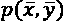进行建模(在这种情况下，我们确信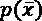的知识是有帮助的，因为我们将使用贝叶斯定理推导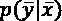)。
当需要找到一个模型来解释现有数据点的结构时，生成高斯混合非常有用，此外，它还能够输出新数据点的概率。例如，异常检测系统可以从正常和恶意活动的数据集开始建模。生成性高斯混合将能够区分它们，并回答问题“一个新的数据点代表一个活动是正常的还是恶意的？”通过提供两种情况的概率。
假设我们有一个带标签的数据集{ X l ，Y l }包含 N 个数据点(从相同的 p 数据中提取)和一个未带标签的数据集 X u 包含 M > > N 个数据点(从边缘分布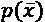中提取)没必要M>T74】N，但是我们想创建一个真正的半监督场景，只有几个带标签的样本。此外，我们假设所有未标记的样本都与pT25】数据一致。这似乎是一个恶性循环，但是如果没有这个假设，这个过程就没有强大的数学基础。
我们的目标是使用生成模型确定一个完整的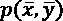分布，然后获得条件分布。一般来说，可以使用不同的先验，但我们现在使用多元高斯模型来模拟我们的数据:
因此，我们的模型参数是所有高斯分布的均值和协方差矩阵。在其他情况下，可以使用二项式或多项式分布。然而，程序不会改变；因此，让我们假设可以用参数化分布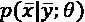来近似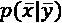。我们可以通过最小化两种分布之间的Kullback-Leibler散度来实现这一目标:
在第12章、EM算法中，我们将展示这等同于最大化数据集的可能性。要获得似然性，需要定义预期高斯数(从标记样本中已知)和表示特定高斯边际概率的权重向量:
使用贝叶斯定理，我们得到:
类似地，给定参数向量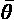和权重向量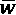，我们可以得到点 X 的条件分布的表达式:
这样就很容易理解每个高斯在决定新点概率中的作用。该模型也可以使用图版符号快速可视化，如下图所示，其中矩形表示重复块(在这种情况下，重复 M 次)，圆圈表示通过箭头有条件链接的变量(有关更多详细信息，请查看柯勒d .、概率图形模型，麻省理工学院出版社，2009年):
生成高斯混合模型的平板图
现在让我们考虑一下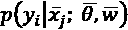的完整表达式:
由于我们使用的是带标签和不带标签的样本，前面的公式有双重解释:
- 对于未标记的样本，通过将第IT50】个高斯权重乘以相对于第IT55】个高斯分布的概率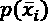来计算。
- 对于带标签的样本，可以用向量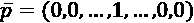来表示，其中1是第IT60】th元素。通过这种方式，我们迫使我们的模型信任标记的样本，以便找到使整个数据集的可能性最大化的最佳参数值。
有了这种区别，我们可以考虑一个单一的对数似然函数，其中术语已经被每个样本的权重所替代:
使用EM算法可以最大化对数似然(参见第12章、EM算法)。在这种情况下，我们直接提供步骤:
- 根据之前解释的方法计算。
- 高斯参数使用以下规则更新:
N 是样本总数。必须重复该程序，直到参数停止修改或修改低于固定阈值。现在我们可以展示一个基于刚才讨论的理论的模型的完整例子。
生成性高斯混合的例子
我们现在可以使用一个简单的二维数据集在Python中实现这个模型，这个数据集是使用scikit-learn提供的make_blobs()函数创建的。此函数允许创建合成数据集来测试需要从一组正态分布中提取数据点的算法。该示例的目标是显示生成性高斯混合的动态，因此我们主动避免了不容易可视化的更复杂的数据集。
然而，读者将能够将相同的代码应用于任何类型的场景，而无需任何修改:
from sklearn.datasets import make_blobs import numpy as np nb_samples = 250 nb_unlabeled = 200 X, Y = make_blobs(n_samples=nb_samples, n_features=2, centers=2, cluster_std=1.25, random_state=100) unlabeled_idx = np.random.choice(np.arange(0, nb_samples, 1), replace=False, size=nb_unlabeled) Y[unlabeled_idx] = -1
我们已经创建了属于2个类的200个样本。然后随机选择250个点成为我们的未标记数据集(相应的类被设置为-1)。我们现在可以通过定义它们的均值、协方差和权重来初始化两个高斯分布。一种可能性是使用随机值；这个选择是最简单的，不需要任何预先的计算。已经证明该算法在任何情况下都是收敛的，但是步骤的数量是初始和最终状态之间的差的函数:
import numpy as np m1 = np.random.uniform(-7.5, 10.0, size=2) c1 = np.random.uniform(5.0, 15.0, size=(2, 2)) c1 = np.dot(c1, c1.T) q1 = 0.5 m2 = np.random.uniform(-7.5, 10.0, size=2) c2 = np.random.uniform(5.0, 15.0, size=(2, 2)) c2 = np.dot(c2, c2.T) q2 = 0.5
然而，协方差矩阵必须是半正定的。从数学的观点来看，一个矩阵如果与同，则称其为正半定。而且，所有特征值总是非负的。方差是一个平方量，因此它是非负的。协方差矩阵是方差概念的扩展，它必须继承相同的属性。特别是，当高斯与轴对齐时，所有非对角线项都为空。对角线上是每个分量的方差，也是特征值。很容易理解所有这些术语都是非负的。
如果相同的高斯旋转，非对角元素可能变得不为零，但我们期望特征值保持非负，因为两个高斯仅在旋转上不同。这样的条件只有通过强加矩阵是半正定的才能得到保证。因此，在定义之后，改变随机值(通过将每个矩阵乘以相应的转置)或者设置硬编码的初始参数是有用的。由于在训练模型之前我们不知道数据集的结构，所以在没有复杂计算的情况下，我们不能容易地定义以最佳方式初始化所有参数的标准。
一个简单的折衷是基于将权重设置为并将协方差矩阵和均值设置为等于样本协方差和均值。通过这种方式，所有高斯分布最初将被重叠，并且算法将移动和变形它们以匹配输入分布。
在这种情况下，我们可以选择以下示例，其中是均值向量，是协方差矩阵，是权重:
m1 = np.array([-2.0, -2.5])
c1 = np.array([[1.0, 1.0],
[1.0, 2.0]])
q1 = 0.5
m2 = np.array([1.0, 3.0])
c2 = np.array([[2.0, -1.0],
[-1.0, 3.5]])
q2 = 0.5
如果我们将高斯投影到 xy 平面上，并通过限制独立变量的范围来截断它们，您将能够看到它们显示为椭圆。为了确定它们的结构和取向，我们需要观察到:
- 主轴被定向为与协方差矩阵的最大特征值相关联的特征向量。同样，短轴被定向为与最小特征值相关联的特征向量(在多维情况下，需要按降序取特征值)。
- 偏心率 e 等于两个特征值之比。当 e = 1 时，椭圆是圆，因为两轴等长。当
 时，椭圆是一个合适的椭圆，沿两个轴中的一个拉伸。
时，椭圆是一个合适的椭圆，沿两个轴中的一个拉伸。
让我们开始找出主轴的方位角 。如果是 x 的倒数，我们得到:
。如果是 x 的倒数，我们得到:
执行此操作的Python代码如以下代码片段所示:
w1, v1 = np.linalg.eigh(c1) w2, v2 = np.linalg.eigh(c2) nv1 = v1 / np.linalg.norm(v1) nv2 = v2 / np.linalg.norm(v2) a1 = np.arccos(np.dot(nv1[:, 1], [1.0, 0.0]) / np.linalg.norm(nv1[:, 1])) * 180.0 / np.pi a2 = np.arccos(np.dot(nv2[:, 1], [1.0, 0.0]) / np.linalg.norm(nv2[:, 1])) * 180.0 / np.pi
结果图如下图所示，其中十字标记代表未标记的点，点和菱形代表属于已知类别的样本:
高斯混合的初始配置
这两个高斯函数由同心椭圆表示，并没有捕捉数据集的实际结构。我们现在可以执行训练程序了。让我们首先为前一次迭代中计算的参数定义临时占位符，并定义一个函数来计算当前值和前一个值之间所有差异的范数之和:
from scipy.stats import multivariate_normal
threshold = 1e-4
def total_norm():
global m1, m1_old, m2, m2_old, c1, c1_old, c2, c2_old, q1, q1_old, q2, q2_old
return np.linalg.norm(m1 - m1_old) + \
np.linalg.norm(m2 - m2_old) + \
np.linalg.norm(c1 - c1_old) + \
np.linalg.norm(c2 - c2_old) + \
np.linalg.norm(q1 - q1_old) + \
np.linalg.norm(q2 - q2_old)
我们现在可以定义实际的训练过程，该过程将被迭代直到参数变得稳定(即，规范total_norm()的总和变得小于threshold):
m1_old = np.zeros((2,))
c1_old = np.zeros((2, 2))
q1_old = 0
m2_old = np.zeros((2,))
c2_old = np.zeros((2, 2))
q2_old = 0
while total_norm() > threshold:
m1_old = m1.copy()
c1_old = c1.copy()
q1_old = q1
m2_old = m2.copy()
c2_old = c2.copy()
q2_old = q2
Pij = np.zeros((nb_samples, 2))
# E Step
for i in range(nb_samples):
if Y[i] == -1:
p1 = multivariate_normal.pdf(X[i], m1, c1, allow_singular=True) * q1
p2 = multivariate_normal.pdf(X[i], m2, c2, allow_singular=True) * q2
Pij[i] = [p1, p2] / (p1 + p2)
else:
Pij[i, :] = [1.0, 0.0] if Y[i] == 0 else [0.0, 1.0]
# M Step
n = np.sum(Pij, axis=0)
m = np.sum(np.dot(Pij.T, X), axis=0)
m1 = np.dot(Pij[:, 0], X) / n[0]
m2 = np.dot(Pij[:, 1], X) / n[1]
q1 = n[0] / float(nb_samples)
q2 = n[1] / float(nb_samples)
c1 = np.zeros((2, 2))
c2 = np.zeros((2, 2))
for t in range(nb_samples):
c1 += Pij[t, 0] * np.outer(X[t] - m1, X[t] - m1)
c2 += Pij[t, 1] * np.outer(X[t] - m2, X[t] - m2)
c1 /= n[0]
c2 /= n[1]
每个周期开始的第一件事是初始化用于存储值的Pij矩阵。然后，对于每个样本，我们可以考虑它是否被标记来计算。使用函数multivariate_normal.pdf()计算高斯概率。当整个Pij矩阵被填充后，我们可以更新高斯分布和相对权重的参数(均值和协方差矩阵)。该算法非常快:在大约五次迭代之后，我们得到如下图所示的稳定状态:
高斯混合的最终配置
两个高斯人通过设置他们的参数完美地映射了空间，从而覆盖了高密度区域。我们可以检查一些未标记的点，如下所示:
print(np.round(X[Y==-1][0:5], 3))
前面代码片段的输出是:
[[-1.37 10.07 ] [ 0.398 -3.857] [-1.866 7.496] [-0.752 -4.314] [ 0.145 -5.932]]
在之前的剧情中很容易定位他们。相应的类可以通过最后的PT21【ij】矩阵得到:
print(np.round(Pij[Y==-1][0:10], 3))
输出是:
[[0. 1.] [1. 0.] [0. 1.] [1. 0.] [1. 0.]]
生成性高斯混合总结
生成高斯混合模型可以学习数据集的结构，并输出任何数据点的概率。它们基于标记和未标记的样本，假设它们同样可信。也就是说，未标记的点像标记的点一样对高斯分布的最终定位有贡献。正如我们在下一节中讨论的，这个条件并不总是满足的，有必要在算法中引入一个微小的修改。
该算法非常快，并且在密度估计方面产生极好的结果。在第12章、EM算法中，我们将讨论该算法的通用版本，解释基于EM算法的完整训练程序。
加权对数似然
在前面的例子中，我们考虑了标记和未标记样本的单一对数似然性:
这相当于说，我们信任未标记的点，就像信任已标记的点一样。但是，在某些情况下，这种假设可能会导致完全错误的估计，如下图所示:
有偏最终高斯混合配置
在这种情况下，两个高斯分布的均值和协方差矩阵已经被未标记的点偏置，并且得到的密度估计显然是错误的。由于标记的点应该是从高斯分布中提取的，因此总是可以训练只包含该样本的模型。如果未标记点具有公平贡献，则均值向量和协方差矩阵在两种情况下应该相对相似(例如，差异的范数预计小于预定义的阈值，该阈值可能被设置为等于最大元素的1/10)。此外，可以比较协方差矩阵的非对角元素，以检查方向是否差异极大。在这两种情况下，较大的差异突出了未标记样本相对于标记样本的优势，并且最终的对数似然比通常小于预期的对数似然(这是高斯错误定位的自然结果，其概率密度在点所在的区域较小)。
当这种现象发生时，最好的办法是考虑双重加权对数似然。如果第一个 N个样本被标记，并且随后的 M个未被标记，则对数似然可以表示如下:
在前面的公式中，如果术语小于1，则可以降低未标记术语的权重，给予已标记数据集更多的重要性。对算法的修改是微不足道的，因为每个未标记的重量都必须根据进行缩放，从而降低其估计概率。在Chapelle O .，schlkopf b .，Zien A .(编辑)，半监督学习，麻省理工学院出版社，2010年，读者可以找到关于参数 选择的非常详细的讨论。
选择的非常详细的讨论。
正如我们之前解释的，有许多潜在的经验法则来确定未标记样本对标记样本的影响。找到最佳 的一个可能策略是基于对标记数据集执行的交叉验证(原因如前所述)。另一个更复杂的方法是考虑
的一个可能策略是基于对标记数据集执行的交叉验证(原因如前所述)。另一个更复杂的方法是考虑 的不同增加值，并选择对数似然最大的第一个值。在这两种情况下，目标是找到一个避免未标记样本占主导地位的值，同时，不要高估分布的作用。
的不同增加值，并选择对数似然最大的第一个值。在这两种情况下，目标是找到一个避免未标记样本占主导地位的值，同时，不要高估分布的作用。
考虑到问题的性质，了解哪种最终配置是最优的并不是一项简单的任务，但是一般来说，当考虑未标记的样本时(特别是，如果问题是反因果的，因此变量xT18】I表示影响)以及当的知识可以提高可能性估计的精确度时，我们期望更好的性能。
如果有额外的验证集可用，或者基本的聚类结构至少部分已知，最简单的方法是测试重新加权对数似然性是否会产生更好的结果。在这种情况下，未标记的数据集迫使模型以错误的方式扩展标记知识，产生最终的有偏全联合概率。
如果问题是一个分类，那么重要的是记住我们正在尝试学习，它可能与只有微弱的相关性。因此，在检查了场景的因果性质(假设是反因果的)后，一个好的做法是试图了解有多少先验信息可以安全地转移到(即，在不改变现有的情况下可以并入模型的先验信息量)并选择使对数似然性最大化的最小值。
自我训练
自我训练是一种非常直观的半监督分类方法，基于平滑度和聚类假设的广泛应用。当已标记的数据集包含关于底层数据生成过程的足够信息(即，CV显示相对较高的准确性)并且未标记的样本被假定只负责算法的微调时，自训练通常是有效的选择。只要不满足这个条件，就不能选择自我训练，因为它严重依赖于标记样本的完整性。
自我训练理论
假设我们有一个标记样本的数据集{XT5】LT7】，YT9】L}，并假设它是从一个数据生成过程pT13】数据中统一抽取的。此外，还有另一组未标记的数据点XT17】U，当然，假设它们具有相同的分布XT21】L。让我们假设使用第一个标记数据集(即仅包含预先标记的点的初始数据集)来训练分类器，并且最终精度足够大，可以认为其预测是可靠的。分类器的泛化能力保证所有预测与训练数据一致，除非样本来自不同的过程。此时，自训练算法可以通过简单的迭代过程尝试包含未标记的数据集:
必须重复该过程，直到所有未标记的值都被标记，并且不再需要重新训练分类器。方法相当简单直观，但是怎么可能相信呢？第一个基本假设是所有的 X 值都来自同一个分布。因此，当训练样本不太小时，分类器可以开始学习底层过程的结构，并发展出一种离散的泛化能力。第二个要考虑的因素是平滑度和聚类假设的影响。特别是，我们需要假设相似的样本很可能与相似的结果相关联，排除事实上突然跳跃的可能性。
在有限类的情况下，如果两个值之间的距离(使用适当的度量，例如欧几里德或曼哈顿)，它们的行为倾向于收敛到单个公共类。
因此，如果初始分类器已经用从基础过程中均匀抽取的样本训练好，将有几个预测的置信度足够大，以证明它们被包括在新的训练集中是合理的。值的数量 k 可以是预先确定的或者基于自适应方法。在第一种情况下，我们总是选择 k 顶部样本，因此， k 必须足够小，以保证最大精度，但同时又足够大，不会过度减慢训练过程。相反，自适应方法可以考虑最低置信水平，并且只选择满足该要求的那些样本。考虑到我们的经验，当采用这种替代方案时，考虑每次迭代的最大值数量的限制也很重要。事实上，可能发生的情况是，具有小容量的分类器将为相当大的子集输出非常大的置信度，即使它们的预测标签不同于基本事实。
对于本章中讨论的所有其他方法，自学习算法必须在整个训练阶段仔细监控，特别是当标记集特别小时。如果例如{ X L ，Y L }，仅考虑 p 数据的有限区域来绘制，则只有几个接近的未标记点将被正确识别。然而，在没有任何其他进一步指导的情况下，该算法将继续标记剩余的值，从而获得越来越多的置信度，尽管结果是错误的。当创建新的扩展训练集时，这个问题是聚类假设的结果。假设某个新的点被添加到初始训练集的边界区域附近。分类器识别出与某些非常相似的 k 值的子集，并相应地标记它们。因为这些点确实非常接近边界，所以预测是正确的，并且新的训练集是一致的。然而，随着该过程的进行，将会发现靠近新边界的其他点，这些点已经被先前的子样本放大。信心不可能受到影响，但错误的概率显然一步一步地增长。在某些特定情况下，这样的过程可能有效，但一般来说，它很可能产生完全错误的结果，如下图所示:
由于自训练算法扩大了边界而导致的错误分类
减轻风险的一种可能方法是分析整个数据集的非线性维度缩减(如果 n > 3 )以及初始决策面的绘图。如果数据集不是极其复杂，将有可能突出基本假设的正确性(即{ X L ，Y L }统一覆盖整个数据生成过程以及那个)。如果它们不被遵守，就有必要重新分析问题或找到更安全的标签样本。现在让我们展示应用于虹膜数据集的高斯朴素贝叶斯算法的自学习能力。
使用Iris数据集进行自我训练的示例
让我们从加载和混洗数据集开始，以满足随机缺失未标记样本的要求:
from sklearn.datasets import load_iris from sklearn.utils import shuffle iris = load_iris() X, Y = shuffle(iris['data'], iris['target'], random_state=1000)
我们现在可以假设我们只有20个(150个)标记样本。由于数组X和Y已经被混洗，我们可以直接拆分它们:
nb_samples = X.shape[0] nb_labeled = 20 nb_unlabeled = nb_samples - nb_labeled nb_unlabeled_samples = 2 X_train = X[:nb_labeled] Y_train = Y[:nb_labeled] X_unlabeled = X[nb_labeled:]
此时，用整个原始数据集训练高斯朴素贝叶斯分类器(使用默认参数)并评估其性能是很有帮助的:
from sklearn.naive_bayes import GaussianNB from sklearn.metrics import classification_report nb0 = GaussianNB() nb0.fit(X, Y) print(classification_report(Y, nb0.predict(X), target_names=iris['target_names']))
前面代码片段的输出是:
precision recall f1-score support
setosa 1.00 1.00 1.00 50
versicolor 0.94 0.94 0.94 50
virginica 0.94 0.94 0.94 50
micro avg 0.96 0.96 0.96 150
macro avg 0.96 0.96 0.96 150
weighted avg 0.96 0.96 0.96 150
平均而言，分类器的精度和召回率都约为0.96，表明存在极少量的假阳性和假阴性。出于我们的目的，我们可以将这个值作为基准(这并不意味着另一个分类器不能实现更好的性能)。现在让我们训练一个基于自我训练的半监督模型:
import numpy as np
from sklearn.naive_bayes import GaussianNB
while X_train.shape[0] <= nb_samples:
nb = GaussianNB()
nb.fit(X_train, Y_train)
if X_train.shape[0] == nb_samples:
break
probs = nb.predict_proba(X_unlabeled)
top_confidence_idxs = np.argsort(np.max(probs, axis=1)).astype(np.int64)[::-1]
selected_idxs = top_confidence_idxs[0:nb_unlabeled_samples]
X_new_train = X_unlabeled[selected_idxs]
Y_new_train = nb.predict(X_new_train)
X_train = np.concatenate((X_train, X_new_train), axis=0)
Y_train = np.concatenate((Y_train, Y_new_train), axis=0)
X_unlabeled = np.delete(X_unlabeled, selected_idxs, axis=0)
过程很简单:使用部分集合训练高斯朴素贝叶斯分类器，如下图所示递增地构建该分类器，其中块 M 2 到 M n 像 M 1 一样创建，通过添加由前一块中构建的模型标记的 k 点:
自我训练中的渐进和连续过程
在每个训练步骤之后，使用predict_proba()方法选择最高置信度的nb_unlabeled_samples点(在我们的例子中，我们倾向于小心，并且将这个数字限制为2个元素)。然后使用先前训练的分类器对它们进行标记，并将其添加到训练集中。在下一次迭代中，新的训练集还将包含合成点，这些点将有助于找到更新的分离超曲面。重复该过程，直到所有未标记的点都被标记并添加到训练集中。考虑到所有的半监督学习假设，我们可以假设仅仅20个点就足以定义高密度区域，以允许第一分类器正确地标记(即，具有高置信度)至少 k 个未标记的点。一旦这些新元素被添加到训练集中，新的分类器可以利用额外的信息来提高其性能。现在，我们可以使用原始完整数据集来评估最终分类器的性能:
from sklearn.metrics import classification_report print(classification_report(Y, nb.predict(X), target_names=iris['target_names']))
相应的输出是:
precision recall f1-score support
setosa 1.00 1.00 1.00 50
versicolor 0.95 0.70 0.80 50
virginica 0.76 0.96 0.85 50
micro avg 0.89 0.89 0.89 150
macro avg 0.90 0.89 0.88 150
weighted avg 0.90 0.89 0.88 150
正如所料，最终的性能比监督方法差，平均精度和召回率约为0.9。然而，考虑到我们只使用了20个带标签的样本(原始数据集的13%)，而基准测试是使用整个数据集来训练的，它们是相当合理的。
该结果证实了聚类和平滑度假设都是有效的，并且一旦聚类的质心已经被粗略地确定，剩余的点就可以以高置信度被标记。当然，要付出的代价是大量训练分类器。在我们的案例中:
可以通过增加每次迭代中添加的未标记点的数量来降低该值，但这会导致最终性能更差。一般来说，通过减少未标记点的数量，从而增加迭代次数，可以获得更高的精度。反之亦然，可以通过增加未标记点的数量来最大化速度。
一种合理的策略(当训练过程必须周期性重复时)是从基线精度(由仅使用标记样本训练的分类器获得)和等于例如总样本大小的1/5的标记样本数量开始。在一次训练后，数量可以减少50%,并重新评估准确性。未标记点的最佳数量是对应于零精度改进的最大值。作为练习，我邀请读者找出这个问题的最优值。令人惊讶的是，它比2大得多，这证实了如果均匀绘制，数据集的信息内容集中在一个小样本中。特别是，基本的信息片段不是相对于单个点，而是相对于它们的集合。
给定随机抽取的子集 X ，如果点数足够大，初始分类器已经拥有定义高密度区域所需的所有元素。如果我们随机抽取，我们从所有聚类中采样的概率非常大，因此我们可以得出结论，Iris数据集本质上是聚类的，每个聚类的几个代表足以将新样本分配到正确的类。
自我培训总结
自训练是一种简单有效的算法，它利用标记数据集的结构来找出合适的分离超曲面。一旦该过程完成，就评估未标记的样本，并且以足够大的置信度分类的点被包括在新的训练集中。重复该过程，直到所有数据点都被成功分类。当聚类假设成立并且只有几个点位于边界区域中时，该算法工作得相当好。此外，它需要输出概率(或任何其他置信度)的分类器，以便决定哪些点是要包括在更新的训练集中的最佳候选。
在下一个部分，我们将分析另一个简单的分类算法，与自我训练相反，该算法依赖于同时使用两个不同的模型，这两个模型对单独的特征子集进行操作。
合作培训
协同训练是另一种非常简单但有效的半监督方法，由Blum和Mitchell提出(在Blum A .，Mitchell T .，Combining the labelled and un labelled Data with Co-Training，11 Annual Conference on Computational Learning Theory，1998)作为当数据集是多维数据集时的替代策略，不同的特征组编码每个类的不同但仍然特殊的方面。联合训练仅在理论上可以仅使用一部分特征对数据点进行分类的情况下有效(即使有轻微的性能损失)。正如我们将要看到的，冗余在存在未标记样本时变得有用，以补偿单个分类器可能拥有的知识的缺乏。相反，如果每个数据点都包含不能分成两个独立自主的组的特征，那么这种方法是无效的。
协同训练理论
让我们假设有一个带标签的数据集{ X L ，Y L }和，一个协同训练方法背后的主要思想是，在许多情况下，一个特征子集(nT19】I表示通用特征索引)可以被一个专门的分类器利用，以便对驱动的特定行为进行建模类似地，剩余的特征(在基于两个分类器的场景中)被另一个分类器使用，这将得出与第一个分类器相同的结论。这意味着两个分类器必须有把握地将一个样本分配到同一个类别。每当它们不一致时，就意味着训练集没有包含足够的信息来做出正确的决定。联合训练的主要假设是两个分类器必须能够仅使用数据集的特定视图来分配正确的标签(这并不总是可能的)。
例如，数据集可能包含代表不同个人的收入和支出水平的点。我们可以合理地假设，一个分类器可以只处理收入数据，而另一个分类器可以只处理支出数据，并得出相同的结论。如果不满足这样的要求(因为执行有效分类需要所有的特征)，则不能应用该方法。
出于我们的目的，假设我们的数据点可以很容易地分成两个不同的视图，分别分配给分类器和。我们感兴趣的是找到最佳参数，使得所有标记点的(和代表 的视图)。此外，我们想要利用未标记的数据集XT33】U，以便获得关于的更好的知识。
的视图)。此外，我们想要利用未标记的数据集XT33】U，以便获得关于的更好的知识。
正如Chapelle，schlkopf和Zien(在Chapelle O .，schlkopf b .，Zien A .(编辑)，半监督学习，麻省理工学院出版社，2010年)所指出的，这个问题可以在贝叶斯框架中进行分析。换句话说，我们从关于分类器的先验知识开始，并使用贝叶斯定理来寻找也考虑未标记样本的后验概率分布。
因此，可以在完整的数据生成过程pT5】数据 (X) 上使用代理分布来表达该问题，使得具有非空概率(即，两个分类器在给定各自视图的情况下关于分配是一致的)。此时，我们可以将定义为关于分类器的先验知识。这种符号可能会引起误解，但是，在这种情况下，我们定义了给定Xtt的联合参数集的概率，并隐含地假设了两个分类器的结构。使用贝叶斯定理，我们可以导出后验分布:
不难理解，假设两个分类器能够为已标记的数据集假定相同的标记分配，并且XT21t重叠，则后验合并了从未标记的数据集导出的知识。该过程通过排除所有那些不一致的分类器(即)并将参数集限制到所有那些给定概率最大的分类器来执行隐式模型选择(因此，未标记样本的知识直接影响选择)。Blum和Mitchell提出了一个实现联合训练模型的简单方案，该方案主要基于以下步骤:
- X L 一分为二视图XL0和XL1和 X U 保持原样或进行子采样。
- 使用{XT49】LT51】0，YT55】L来训练分类器。
- 使用{XL1， Y L }训练分类器。
- 给定一个未标记样本的子集，要求两个分类器标记n个正点和m个负点(在我们的示例中，我们将通过选择对应于最高置信度水平的 k 点来放宽该规则)。
- 新标记的样本被添加到训练集中，并且从2开始重复该过程，直到所有未标记的样本都被处理。
正如已经讨论过的，这种方法有一个强大的先决条件()，这在许多现实世界的应用程序中是无法满足的。此外，当要素不能立即分割成两个相关组时(例如，当它们表示来自不同传感器的同类测量时)，可能很难识别同一数据集的视图。
同样重要的是要记住，只有在这种假设下，未标记的数据集才能提供有价值的信息，因为在所有其他情况下，后验分布可能会因两个分类器中的一个没有校正的错误分配而产生偏差(换句话说，我们假设两个分类器中的至少一个总是对正确的标记分配非常有信心，而例如，另一个不可能已经达到稳定的配置)。
因此，联合训练主要在数据集被自然分割的所有场景中是有用的，并且在所有其他场景中会变得不可靠，因为视图不允许两个分类器中的任何一个找到正确的分配。为了更好地理解这个过程，让我们将这个方法应用于葡萄酒数据集，并得出一些结论。
葡萄酒数据集联合训练示例
from sklearn.datasets import load_wine from sklearn.utils import shuffle wine = load_wine() X, Y = shuffle(wine['data'], wine['target'], random_state=1000)
葡萄酒数据集包含不同葡萄酒的化学数据(178个数据点)。特别是，有13种属性的行为不被认为是已知的(例如，我们不知道它们是如何对味道做出贡献的)。因此，由于这是一个仅具有教学目的的练习，我们假设可以使用仅包含前7个特征和其余6个特征的子集来区分类别(这在化学上是否正确并不重要，但在现实生活中，数据科学家永远不应该决定任意分割特征，因为只有领域专家才能拥有做出通常违反直觉的合理选择所需的特定意识)。在这种情况下，假设我们有20个标记点和158个未标记点:
nb_samples = X.shape[0] nb_labeled = 20 nb_unlabeled = nb_samples - nb_labeled nb_unlabeled_samples = 2 feature_cut = 7 X_unlabeled = X[-nb_unlabeled:] X_labeled = X[:nb_labeled] Y_labeled = Y[:nb_labeled] X_labeled_1 = X_labeled[:, 0:feature_cut] X_labeled_2 = X_labeled[:, feature_cut:]
数组X_labeled_1/2包含训练集，它们共享同一个Y_labeled数组。在自我训练的例子中，我们将使用两个高斯朴素贝叶斯分类器(请读者测试其他模型，如逻辑回归或核SVM)。第一步是仅基于标记的so训练监督模型，以获得基线基准:
from sklearn.naive_bayes import GaussianNB from sklearn.metrics import classification_report nb0 = GaussianNB() nb0.fit(X_labeled, Y_labeled) print(classification_report(Y, nb0.predict(X), target_names=wine['target_names']))
前面代码片段的输出是:
precision recall f1-score support
class_0 1.00 0.51 0.67 59
class_1 0.68 1.00 0.81 71
class_2 1.00 0.92 0.96 48
micro avg 0.81 0.81 0.81 178
macro avg 0.89 0.81 0.81 178
weighted avg 0.87 0.81 0.81 178
结果证实，即使是小样本也可以产生良好的性能，加权平均精度约为0.87，召回率稍差。我们现在可以继续使用共同训练方法，在每次迭代中为每个分类器选择n_unlabeled_samples点(具有最高置信度的点):
import numpy as np
from sklearn.naive_bayes import GaussianNB
nb1 = None
nb2 = None
while X_labeled_1.shape[0] <= nb_samples:
nb1 = GaussianNB()
nb1.fit(X_labeled_1, Y_labeled)
nb2 = GaussianNB()
nb2.fit(X_labeled_2, Y_labeled)
if X_labeled_1.shape[0] == nb_samples:
break
probs1 = nb1.predict_proba(X_unlabeled[:, 0:feature_cut])
top_confidence_idxs1 = np.argsort(np.max(probs1, axis=1))[::-1]
selected_idxs1 = top_confidence_idxs1[0:nb_unlabeled_samples]
probs2 = nb2.predict_proba(X_unlabeled[:, feature_cut:])
top_confidence_idxs2 = np.argsort(np.max(probs2, axis=1))[::-1]
selected_idxs2 = top_confidence_idxs2[0:nb_unlabeled_samples]
selected_idxs = list(selected_idxs1) + list(selected_idxs2)
X_new_labeled = X_unlabeled[selected_idxs]
X_new_labeled_1 = X_unlabeled[selected_idxs1, 0:feature_cut]
X_new_labeled_2 = X_unlabeled[selected_idxs2, feature_cut:]
Y_new_labeled_1 = nb1.predict(X_new_labeled_1)
Y_new_labeled_2 = nb2.predict(X_new_labeled_2)
X_labeled_1 = np.concatenate((X_labeled_1, X_new_labeled[:, 0:feature_cut]), axis=0)
X_labeled_2 = np.concatenate((X_labeled_2, X_new_labeled[:, feature_cut:]), axis=0)
Y_labeled = np.concatenate((Y_labeled, Y_new_labeled_1, Y_new_labeled_2), axis=0)
X_unlabeled = np.delete(X_unlabeled, selected_idxs, axis=0)
这个过程并不与自我训练有很大不同，但最终，我们有了两个不同的分类器。让我们开始评估第一个:
print(classification_report(Y, nb1.predict(X[:, 0:feature_cut]), target_names=wine['target_names']))
输出是:
precision recall f1-score support
class_0 1.00 0.75 0.85 59
class_1 0.77 0.97 0.86 71
class_2 0.95 0.88 0.91 48
micro avg 0.87 0.87 0.87 178
macro avg 0.91 0.86 0.87 178
weighted avg 0.89 0.87 0.87 178
可以看出，第一个分类器达到了更好的平均精度，而第二个分类器的性能最差。然而，结果比基线基准要好，这部分证实了我们最初的假设，即只使用一个特征子集来区分类别的可能性。注意到这一点并不奇怪，至少在半监督的情况下，较少数量的特征允许我们获得更准确的预测。
考虑到在每次迭代期间，两个分类器都建议具有最大置信度的标签，可以解释这样的行为。如果平滑假设成立，找到至少一个非常接近标记聚类的点的概率是相当大的。由于两个模型中没有一个是强制(至少直到有足够的剩余值)以低置信度标记点(与监督方法相反)，联合训练避免了风险决策，让标记的数据集增长以试图保持最佳置信度水平(当然，一旦添加了最困难的点，该置信度水平就会衰减)。此过程如下图所示，其中“有风险”的数据点保持未标记，直到置信度超过最小可接受阈值:
联合训练标记流程示例
print(classification_report(Y, nb2.predict(X[:, feature_cut:]), target_names=wine['target_names']))
前面代码片段的输出是:
precision recall f1-score support
class_0 1.00 0.71 0.83 59
class_1 0.78 0.97 0.87 71
class_2 0.96 0.96 0.96 48
micro avg 0.88 0.88 0.88 178
macro avg 0.91 0.88 0.89 178
weighted avg 0.90 0.88 0.88 178
同样，最终的表现非常积极，明显优于基准。我们可以得出结论，第二类问题更大(有少量漏报)。这个结果可以直接与更大的支持度(71分)连接，可以驱动分类器错误地给这个类分配更多的分。然而，这不是讨论结果的内部结构的上下文，其他算法对所有类都表现良好也不是不可能的。
联合培训总结
如果一个点的最终标签是通过采用具有最大置信度的分配来决定的，则基于有限数量的未标记点的协同训练方法比监督替代方法表现得更好。作为练习，我邀请读者测试其他模型，并找出达到平均精度等于或大于0.85所需的最少标记点数量。
总结
在这一章中，我们介绍了半监督学习，从需要证明方法的场景和假设开始。我们讨论了在使用监督和半监督分类器时平滑假设的重要性，以保证合理的泛化能力。然后，我们引入了聚类假设，它与数据集的几何形状严格相关，并允许处理具有强结构条件的密度估计问题。
最后，为了避免维数灾难，我们讨论了流形假设及其重要性。
本章接着介绍了一个生成和归纳模型:生成高斯混合模型，它允许从假设先验概率由多元高斯分布建模开始，对标记和未标记样本进行聚类。我们还介绍了自我培训和共同学习的概念。前者是一种利用聚类和平滑假设的算法，通过迭代过程使初始分离超曲面适应未标记数据集，而后者是基于由两个专门的分类器同时利用同一数据集的两个不同“视图”。
在下一章第4章、高级半监督分类中，我们将通过讨论一些更复杂的半监督分类算法来继续这一探索，如CPLE、S3VM和直推式SVM。这些模型可以解决非常复杂的问题，而本章讨论的基本算法可能会失败。读者将了解它们的特性，以及如何在现实生活中使用Python实现它们。
延伸阅读
- Chapelle O .，schlkopf b .，Zien A .(编辑)，半监督学习，麻省理工学院出版社，2010年
- Peters J .，Janzing D .，schlkopf b .，因果推理的要素，麻省理工学院出版社，2017年
- 霍华德R. A .，动态规划和马尔可夫过程，麻省理工学院出版社，1960年
- Hughes G. F .，统计模式识别器的平均精度，IEEE信息论汇刊，14/1，1968
- Belkin M .，Niyogi P .，黎曼流形上的半监督学习，机器学习56期，2004
- Blum A .，Mitchell T .，结合标记和未标记数据与共同训练，11 第届计算学习理论年会，1998
- Loog M .，半监督分类的对比悲观似然估计，arXiv:1503.00269，2015
- 约阿希姆·t .，使用支持向量机进行文本分类的直推推理，《ICML》第99卷/1999年
- 柯勒d .，弗里德曼n .，概率图形模型，麻省理工学院出版社，2009年
- Bonaccorso G .，机器学习算法，第二版，Packt出版，2018